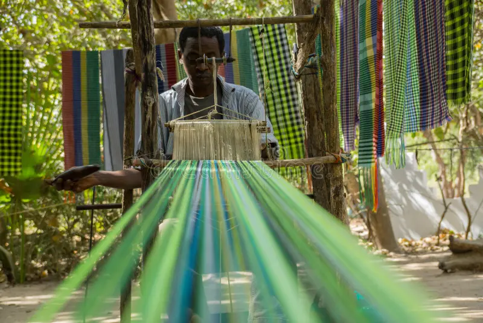
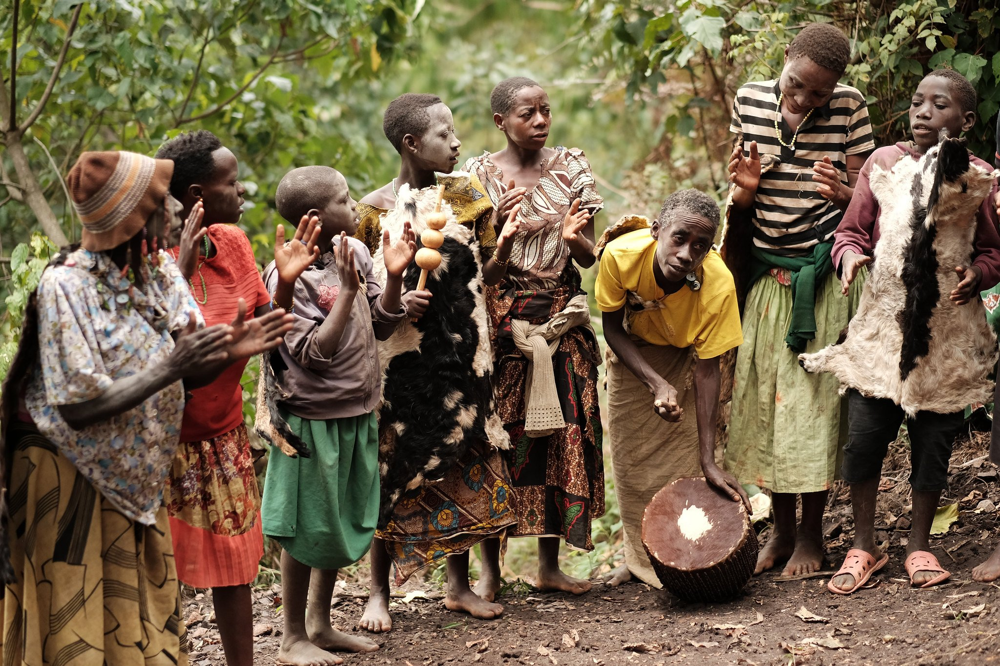
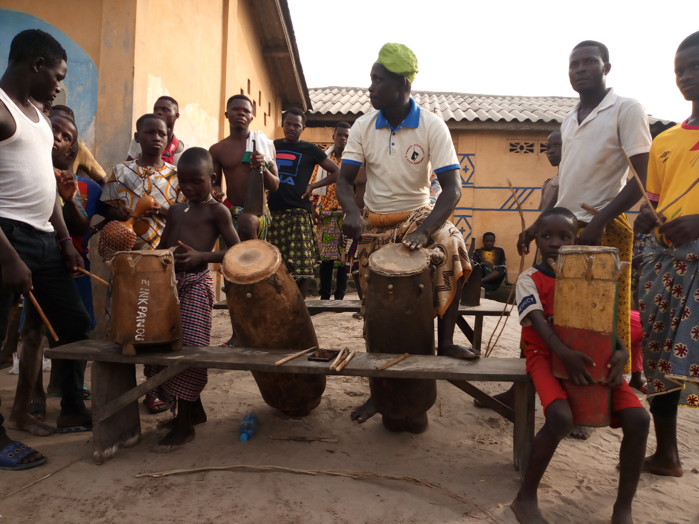
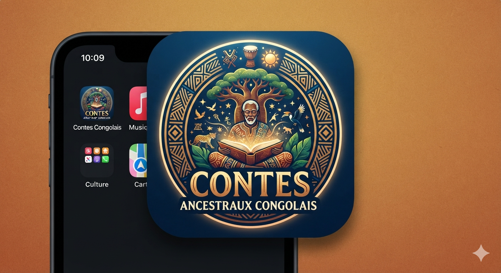

Ce que nous faisons, ce que nous avons déjà accompli
Quatre missions permanentes, portées sur le terrain depuis 2022 auprès des villages partenaires.
Ce que nous faisons sur le terrain
Collecte de contes
Enregistrement audio des anciens dans les villages partenaires.Ateliers de transmission
Initiation des jeunes à la musique traditionnelle : sanza, tam-tam.Bibliothèque orale
Archivage numérique des récits collectés, ouvert à tous.Formation d'artisans
Accompagnement dans les techniques traditionnelles de tissage-
12
Ateliers organisés
-
350
Jeunes sensibilisés
-
8
Villages partenaires
-
5
Langues documentées
Nos réalisations jusqu'ici
Un aperçu chronologique des projets menés sur le terrain.

Atelier de tissage traditionnel
18 artisans formés aux techniques ancestrales de tissage sur trois jours

Campagne de collecte de contes
32 récits enregistrés auprès des anciens, désormais archivés dans la bibliothèque orale.

Ateliers de musique ancestrale
120 élèves initiés à la sanza et au tam-tam dans 4 établissements scolaires.

Lancement de la bibliothèque orale numérique
Mise en ligne des 80 premiers contes archivés, ouverts au public.